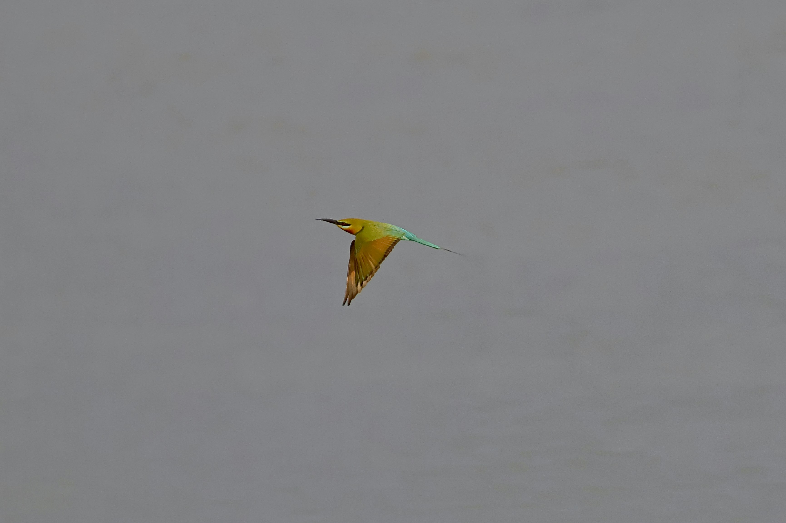

The Blue-Tailed Bee-Eater is a graceful, brightly coloured bird that specializes in catching flying insects. It has a green body, a yellow and blue throat pattern, a dark eye stripe, and a distinctive blue tail that gives the species its common name. Like other bee-eaters, it often hunts from exposed perches, launching into the air to capture bees, wasps, dragonflies, and other insects before returning to its perch. It can be found in open woodland, grassland, wetlands, riverbanks, and other open habitats, where groups may gather and perform spectacular aerial feeding flights.
Family: Meropidae